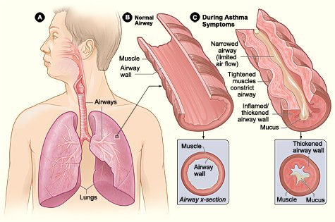
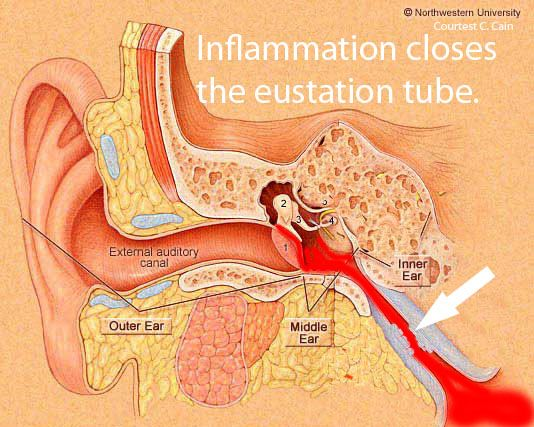

How to become a better you?
Wisdom Square's Unlocking Your Potential E-Course
Discover the New "Nutrition System" PROVEN to Make You Healthier Than You Would Ever Imagine
I believe in taking control. I believe in having ownership and personal responsibility over one’s own life. The way I take control over my life is by having a complete understanding of what my body needs to thrive. I just happen to focus on the fuel or food of the body. Want to learn more?


Many people know me, but they don’t know my full story. When I was a kid I struggled with my health. I was born with very bad asthma that had me in and out of the hospital, hay fever, horrible allegories to pollen, and even hearing problems from as long as I can remember. I used to hate the idea that I wouldn’t be able to do the same things that all the other kids got to do like play sports or even play a wind instrument. For a while this held me back.
Now that I’m older, I realize that something is very wrong for a child to be born with all of these problems. A baby should be born healthy, but most of us are not. Instead we are born with illnesses that never existed before today. Is that fair?
Now if you asked me what I was eating as a child, I would have to tell you that for breakfast I had Lucky Charms cereal with a glass of soda, for lunch I had McDonalds, and for dinner I had steak with white rice, white potatoes, and maybe some white bread. You can guess what my parents were eating before they had me too.
Now the problem with this is a long time ago we never had access to these foods, but we also didn’t have the same diseases that we have today. The bigger problem that most people, including the top alternative natural health experts, continue to overlook and never talk about is… hybrid food. This is the real reason why their advice is limited. You’ll hear all about why sugar is bad for you. Why processed, inorganic, GMO food is bad… but it’s the same people that just avoid these foods that are the ones who still end up getting sick or continuing to have their illness that holds them back.
It is amazing how many diseases and ailments can be healed by changing what we eat, but we all have different health issues and health backgrounds that we have inherited. And this is what we need to eat to cure. And just imagine the mind of a person who spent their whole life eating the wrong things… how could we expect their thinking to not be influenced by the food? Do we even know what our highest potentials are even capable of?
You see, my goal is not to help someone just live longer, but to complement their lifestyle. Whether a person’s passion lies in their career, family, or hobby, this course will help you produce a better version of yourself. The fact is certain lifestyles are more susceptible to certain diseases, which requires knowing which food and herb is good for what. For example, if someone is an author that needs to stay up all night researching, what kind of food will help the person’s mind to stay at its peak and what will help the joints in the hand from developing arthritis?
Every food you eat does something specific to your body when you eat it. It’s this ability to know that will take you to where you want to be physically, mentally, and even emotionally. How to heal naturally, opposed to a quick fix via man-made chemicals.
Only together can we start a health revolution that allows us to redefine what it means to be healthy. This course is meant for those whom consider themselves dream chasers and shakers. The name Wisdom Square itself calls out for those who are unsatisfied with what society has offered them. If you’re reading these words, then that means you want to learn so you may be able to help yourself and those around you. To help you realize and actualize your fullest potential, you must feed your body the right fuel. That will always determines how far you can go, both mentally and physically. Just like a diesel engine would breakdown if you fed it regular gasoline, you should not be eating the regular Standard American Diet… or what you can easily find in your local supermarket for that matter.
You need true super foods to fuel a super lifestyle. If you want to be able to work without tiring quickly, support thinking and learning, then this course is perfect for you. If you don’t want to waste time getting sick, then this is the information that you need to learn.
In this course, I will share my own personal experiences with different plant based foods. I will teach you recipes and ideas for meals that will keep you and your family beyond healthy. I break this down into two ways to keep you motivated… functional eating and familiar eating. Like they say, if something doesn’t taste good, it doesn’t matter if it’s good for you, because you’ll never eat it. You’ll get to watch as I prepare the meals and make my own medicine in my kitchen as I take you through each step and explain its importance. I take into account the real world lessons that proved to Dr. Sebi and the NY State Supreme court in 1988 that every disease in the world may be cured. I make it clear and simple how this works, as I have done the research for you by critically analyzing every lecture and interview Dr. Sebi has made available to the public. Since he has not written down any of his research and findings, this information is lost to the vast majority. With this I intend on providing a better and deeper insight into Dr. Sebi’s way of eating and taking care of the body with natural herbs.
(The name of the book that contains all of the proof that Dr. Sebi has been able to cure every disease is called: Seven Days in Usha Village: A Conversation with Dr. Sebi and is sold on his website here: http://www.drsebiscellfood.com/collections/books-and-media/products/seven-days-in-usha-village-a-conversation-with-dr-sebi)
I will show you the basic tools you can use to determine for yourself what to eat and what not to. After all, each person’s body will require specific things based on their genetical-predisposition, which is determined by the geographical region from which you derive from. Tropical climates means no, if at all any, meat is consumed… while colder regions have evolved into eating meat. This is why the debate between a vegan diet and the paleo diet cannot be resolved… it’s for the simple reason that some people need to eat meat, while others need to avoid it like the plague. The key is every person is different. Some people need to become complete vegans, while others don’t. Some people require lots of fruits, while others are too sensitive to their higher sugar content. You have to learn how to make the right choice for yourself. You may just have to limit your consumption of certain foods, instead of completely doing away with them too… and that goes for certain plant based foods as much as it does with meat. As far as meat is concerned, some people may very well need to consume some red meat, fish, and poultry in the proper amount for the person. There is an Acid / Alkaline balance that is different for everyone that never gets discussed. Meaning too much of one type of food may or may not cause an imbalance in the person depending on their metabolic type. You have to eat what ultimately makes you feel good and feel energized. I don’t intend to at all preach dogma or my way to be right for everyone. The point of this is to instead help teach you how you can learn what is best for you, not to teach you what is best for me.
Still there are some overarching rules that apply to all people that will help you unlock your highest potential.
This course comes with a list of acidic (hybrid) foods (which eat through the mucous membrane, which is the cause of all disease), alkaline (non-hybrid) foods and less harmful hybrid foods that are safe for you to eat in moderation that you may print out and keep on your refrigerator to help you start your journey. Also included is a large variety of recipes for meals and drinks, and multiple examples of complete daily menus.
Now you have a choice to make. Continue to allow other people decide what goes into your body, ultimately affecting the way you think and behave. Or take full control over your food, and thus your thinking and actions. Many have said they wished they knew this information earlier, what that would have done form them if they could have started this journey years ago. Discover your full potential today. Clean food = clean mind.